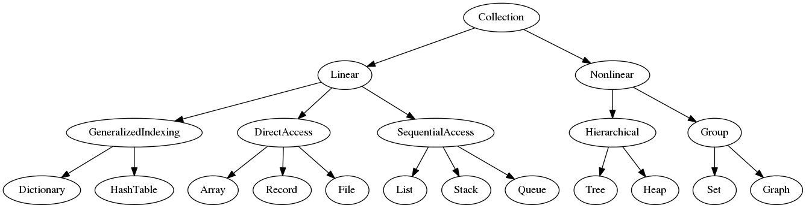

CarLabs: Car Expert System
[
Query and Answer |
About ]
This is a small program which will load stockquote data from QuanDL by 'requests' library, parse the JSON data with 'simplejson' library, process the data in 'pandas' dataframe and show a 'Bokeh' plot through embedded HTML
Day 1 and Day 2: Linear and Nonlinear data structures and corresponding algorithms

Day 3 and Day 4: Baseline Statistics and Probability
- A First Course in Probability, Ross, Sheldon M. Problems 3.1, 3.9, 3.14, 3.22, and 3.29 (pp. 114–116), as well as 4.3, 4.9, 4.14, 4.16, 4.19, and 4.22 (pp. 183–185). Problems 5.8, 5.11, 5.13, 5.17, and 5.18 (pp. 230–231), in addition to 8.5, 8.6, 8.7, 8.11, and 8.13 (pp. 415–416).
- Common Probability Distributions
Day 5: Unix, Bash, Git
Day 6: Python Basics
Day 7: Scientific Computation
Day 8: Plotting
Day 9: Manipulating Data
Day 10: SQL
Day 11: Regular Expressions and jQuery
Day 12: Flask and Basic Websites